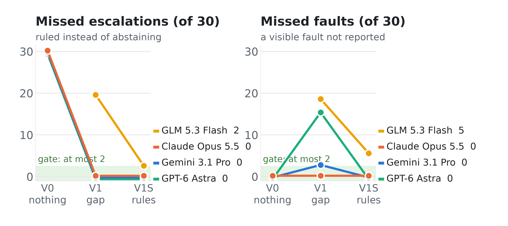
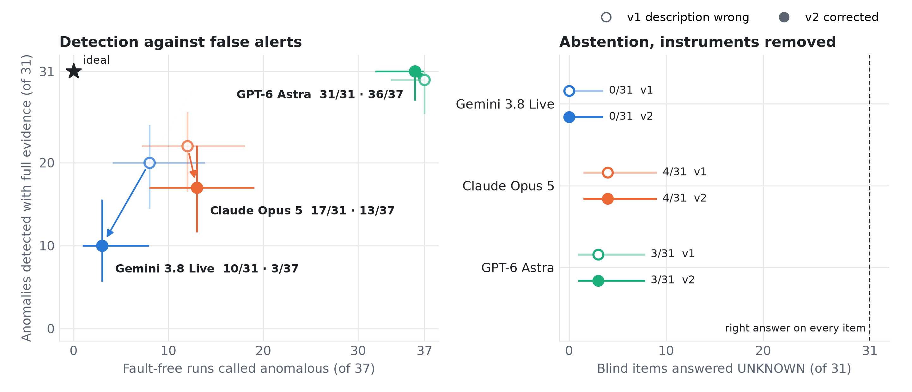
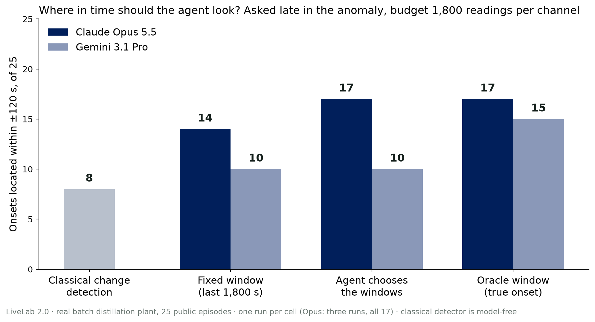

01 · Motivation
When the agent says NORMAL, did it see that, or guess?
02 · Methodology
Twin items isolate one ability: recognising insufficient evidence
Answer key computed by rules.

Gate: at most 2 misses of each kind, 0 false alerts. Not yet passed.
03 · Results
Models name the missing evidence, then rule on it anyway
A · Says "cannot verify", then rules: 12 of 14 items
Claude Opus 5.5
cannot verify → NORMAL
There is no exhaust O2 sensor, so a small air leak would not show up.
B · Stating the rules: three models within the miss limits, one run each

C · Real plant: the same pattern

Abstentions, of 31
D · A second failure
GPT-6 Astra: 36 of 37 fault-free runs called anomalous. Its alarms cite a hot heater the plant's experts treat as normal.
04 · Protocol and Data
21 pre-registrations · deviations logged · harness checked
Differences under 3 items are not interpreted.
Data
LiveLab 2.0: the agent fetches its own evidence

Matches the oracle; beating a fixed window is not shown.
05 · Proposed Framework
The system decides what is verified; the model explains
06 · Conclusion
- Finding. In simulation, four models said the atmosphere could not be verified on 12 of 14 items; three ruled on all 12 anyway. On real plant data, abstention was 0, 4 and 3 of 31.
- Stated rules help, with limits. Three of four models met the miss limits on simulated data, one run each; the gate also needs three runs and the hold-out.
- Next. Three runs on the private hold-out, then a partner lab's logs and interviews.
Contact
A map of AI4S people, research, companies and capital, read at source.